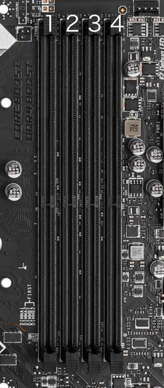
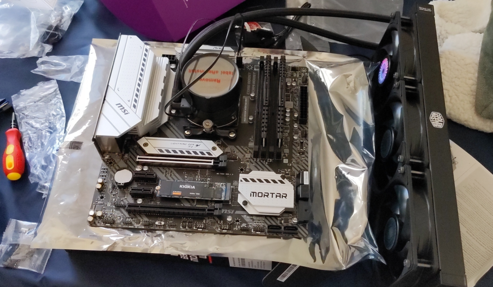
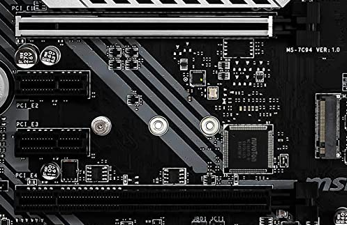
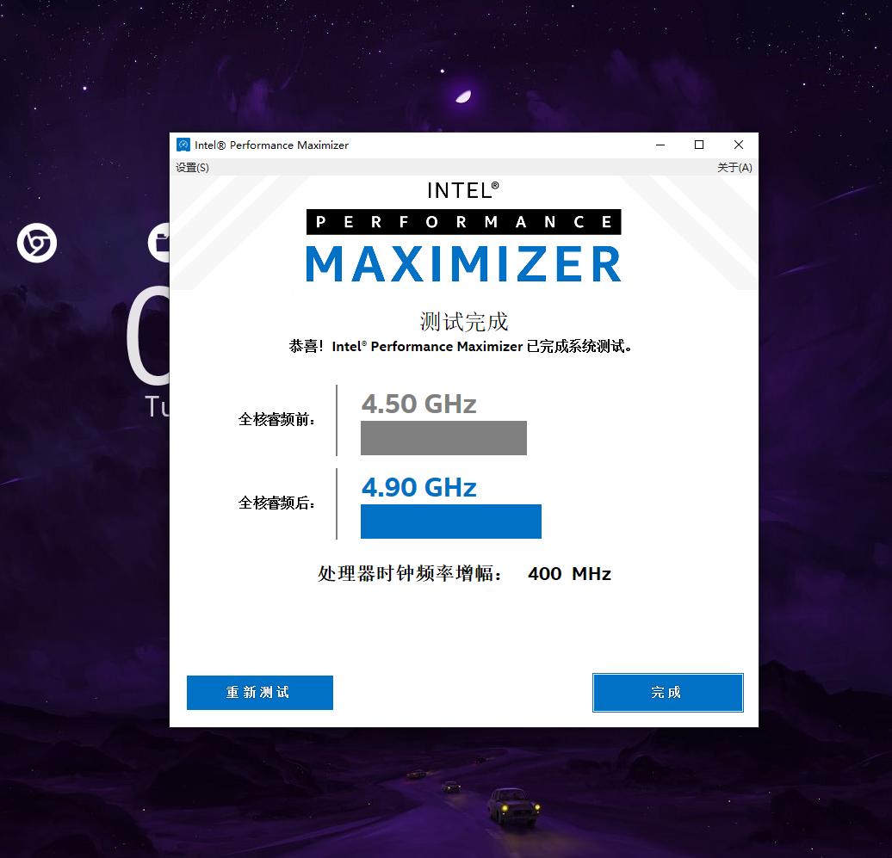

2021 PC 装机指北
需求和配置
2020 ver.
去年装的机器是在忽略玩大作游戏需求的情况下以配置尽量均衡为出发点装的。板 U 选择 I5-10600KF 和 MSI-Z490 A Pro, 可以说是性价比拉满。存储由于西部数据的冷数据门爆雷（后来西数又爆了缓外降速...)，于是选择 KIOXIA （原东芝）的 SSD，HDD 选择西数的 4T 蓝盘基本满足家用需求。显卡选择 1660S，在不玩 3A 的情况下是折中的选择。（谁能想到一年过后这张卡的价格已经是我购买时的两倍多了呢？显卡理财.jpg）剩下的部件也都具有优秀的性价比，以划算的价格提供了不错的使用体验。推荐。
| Component | Name | Price (RMB) |
|---|---|---|
| 板 U | Intel I5-10600KF + 微星 Z490 A PRO | 2129 |
| 内存 | 威刚（ADATA）DDR4 3200 32GB (16GBx2) 套装 XPG- 威龙 Z1) | 789 |
| 显卡 | 七彩虹（Colorful）战斧 GeForce GTX 1660 SUPER 6G | 1899 |
| 固态 | 铠侠（Kioxia）1000GB SSD 固态硬盘 NVMe M.2 接口 EXCERIA NVMe RC10系列 | 719 |
| 电源 | 安钛克 HCG650W | 579 |
| 散热 | 利民（Thermalright） FS140 霜灵 双塔散热器全电镀 RGB | 249 |
| 机箱 | 先马（SAMA）鲁班 1 黑色 游戏电脑主机箱 | 188 |
| 存储 | 西部数据 SATA 接口 3.5 英寸 台式机械硬盘 4TB WD40EZRZ | 579 |
| 总计 | 2020 ver. | 7131 |
出国之前忘了存照片所以没图，之后再补吧。。。
2021 ver.
今年装的机器因为要丢实验室做实验用，所以对 CPU 性能需求较高，结合预算选择了 5800X，配的主板是 B550M Mortar WiFi，属于在预算内的最好选择了（本来实验是可以丢服务器上编译的，然而我有个刷机的需求，所以如果在服务器上编译的话还需要把 Output Binary 拖回本地再刷进设备，这样一来就不如本地编译效率高了）。显卡方面由于完全没有在实验室打游戏的可能性，所以使用捡垃圾大法从亚马逊上找了张 2014 年生产的 W2100。作为一张亮机卡却有两个 DP 接口还是很不错的。比较坑的地方是买回来才发现这玩意的 PCI 挡板是半高的，装在我全高的机箱上不是特别稳，插线的时候需要小心一些。剩下的部件也都是预算能承受范围内我觉得比较优的选择，目前看来还不错。
| Component | Name | Price (USD) |
|---|---|---|
| 主板 | MSI MAG B550M WiFi | 188.67 |
| CPU | AMD Ryzen 7 5800X | 393.99 |
| 内存 | XPG Z1 DDR4 3200MHz (PC4 25600) 32GB (2x16GB) | 119.99 |
| 显卡 | AMD FirePro W2100 | 63.95 |
| 固态 | SAMSUNG (MZ-V8V1T0B/AM) 980 SSD 1TB | 126.84 |
| 电源 | Antec HCG650 Gold Power Supply | 89.99 |
| 散热 | Cooler Master MasterLiquid ML360 Mirror | 99.99 |
| 机箱 | Cooler Master MasterBox MB520 RGB | 64.99 |
| 鼠标 | Logitech G502 | 44.45 |
| 键盘 | iKBC CD108 V2 Ergonomic Mechanical Keyboard with Cherry MX Brown Switch | 79.99 |
| 显示器 | Acer XV272U * 2 | 291.00 *2 |
| 总计 | 2021 ver. | 1854.85 |
2022 ver. (Updated: December 2022)
去年组的机器被我丢实验室跑实验了，而自己在家一直用的是 2016 年买的笔记本。正好矿潮结束了，在圣诞节之前终于决定组一台自用的机器。除了显卡和内存，其他部件都没怎么管性价比，突出一个开心就好。显卡方面，由于 4080 / 4090 价格感人，最后选择了 3070 ti。内存方面，由于没有内存超频的习惯，所以选了 3200 MHz 的 XPG Z1。不过其实这套的主板和 CPU 都支持更高的内存频率，日后升级内存的话可以考虑换更高频率的条子。
| Component | Name | Price (USD) |
|---|---|---|
| 主板 | ROG STRIX Z790-A GAMING WIFI D4吹雪 | 379.99 |
| CPU | Intel Core i7-13700K | 429.99 |
| 内存 | XPG Z1 DDR4 3200MHz (PC4 25600) 32GB (2x16GB) | 109.99 |
| 显卡 | ASUS ROG Strix NVIDIA GeForce RTX 3070 Ti OC Edition | 699.99 |
| 固态 | SAMSUNG 980 SSD 1TB PCle 4.0 NVMe M.2 | 99.99 |
| 电源 | Phanteks (PH-P750G_US01) AMP Series 750W 80PLUS Gold | 133 |
| 散热 | ASUS ROG Strix LC II 360 | 179.99 |
| 机箱 | Antec DF700 Flux | 109.99 |
| 总计 | 2022 ver. | 2142.93 |
准备
工作台
螺丝刀
扳手，可选，用来拧螺柱
Building
取出主板
开始装机之前释放静电，然后将主板放在主板包装盒上。
CPU
找到主板上的 CPU 插槽。装 CPU 基本都是金属拉杆解锁，放进 CPU，金属拉杆锁定这几个步骤。用 CPU 底部的金三角确认正确置入方向即可。
SSD
一般情况下找到 M.2 插槽将 SSD 斜向插入再拧上 M.2 小螺丝即可。
主流主板一般会有一个 M.2 挡板 (M.2 Shield) 帮助 SSD 散热，拆下挡板即可看到高速 M.2 插槽。
装好 SSD 后再把挡板装回去即可，如果挡板上带了保护贴则需要在把挡板装回原位之前撕掉保护贴。
在装 SSD 的时候，有的主板会自带 2280 SSD 的螺柱，这种就插入 SSD 再拧好螺丝即可，如果主板还在螺柱上预装了螺丝记得先把螺丝卸下来。如果你的 SSD 不是 2280 尺寸或者主板没有预装好 2280 位的螺柱就需要自己先装一个螺柱到对应位置。
内存
找到内存插槽插进去就行。
对于主流的四插槽主板，以离 CPU 从近到远的顺序把插槽编号为 1234，一根内存的话插 2 槽，两根内存的话插 2 4 槽，四根内存的话插满即可。

散热
参考说明书根据你的散热器型号和 CPU 插槽型号在散热塔（风冷）/ 冷头（水冷）上装好扣具。在能覆盖 CPU 表面的情况下抹上尽量薄的一层硅脂（新手的话稍微多抹一点也无所谓）。
风冷
将散热塔装到 CPU 上。如果你的散热塔尺寸很大，你可能需要一把长一些的螺丝刀来将其固定。拧螺丝的时候注意轮流拧紧来让硅脂被压的尽量均匀。最后把 CPU 风扇装到散热塔上并连接主板上的 CPU_FAN 针脚即可（也可以不急着连线，后面再连）。
水冷
将风扇装到冷排上。然后把冷头扣到 CPU 上，拧螺丝的时候注意轮流拧紧来让硅脂被压的尽量均匀。
到此主板就可以准备安装到机箱上了。它现在看起来大概是这样

HDD (Optional)
把 HDD 固定到机箱的硬盘架上，硬盘架可能在电源位置旁边。如果不装 HDD 也可以把硬盘架拆了方便走线。
电源
我习惯在装主板之前先把电源装到机箱上去。当然你也可以先装主板后装电源。根据我的经验如果先把电源装到机箱上后就不太方便往上接线了。所以你可以参考我的做法，先把线接在电源上，再把电源固定在机箱上。固定电源很简单，找到电源仓，用四个螺丝将其固定即可。
主板安装
在机箱的对应位置上找到符合你主板尺寸的孔位，部分主板可能需要先在这些孔位上装好螺柱。之后把主板平放上去，对准孔位，拧好螺丝。有些主板的 IO 挡板和主板是分开的，别忘了把 IO 挡板装上去。
显卡
如果你只安装一个显卡，将其插在离 CPU 最近的 PCI 接口上并取下机箱上对应位置的 PCI 挡板即可。

接线
接线基本上就接主板和接电源两类线。电源的供电主要就供主板的 24-pin 供电，CPU 8-pin 供电和显卡等一些地方可能用到的 PCI 8-pin 供电。接主板的线可能有 CPU 风扇，系统风扇，水泵，RGB 灯光，USB 接口和开机键等一系列接口。按着说明书接就行。
如果对美观性有要求可以多拿几根绑带理理线。
如果不想理线，接线的最低要求是线不会因交叉而影响部件的安装和拆除并且远离风扇。条件满足后，侧板一盖就是理好了（确信）。
装机部分到此就基本结束了。
个人购买建议
是否超频
如果确实有性能刚需并且散热给力的情况下可以考虑超频。Intel 带 K 的 CPU 配 Z490 / Z590 主板超频效果还可以。但是考虑 Intel 11 代 U 的散热已经很艰难了，建议多考虑下散热器的实力。
如果不喜欢折腾的话 Intel 有个傻瓜式一键超频软件，本傻瓜在我的 10600KF 上试了一下效果还不错。

对于部分华硕主板，你也可以使用 AI 一键超频。我在 13700K 上试了一下，感觉电压给的稍微有点高，通过监测软件看到单核最高频率是 6.0 GHz，高负载下短时间内 P-Core 频率是 5.8 GHz，时间长一点会降频到 5.6 GHz，Cinebench R23 跑到接近十分钟的时候有黑屏风险。但总体来说能用。
风冷？水冷？
分体水在本文属于论外。本文的所有水冷都代指一体式水冷散热器，所有风冷都代指塔式风冷散热器
- 由于风冷散热塔的体积一般较大，如果买的机箱比较小的话，建议水冷。
- 同上，由于风冷散热塔比较沉，如果在竖装主板上不拆散热器的情况下运输的话，有可能会压坏主板。所以有便携需求，建议水冷。
- 风冷的使用寿命高于水冷，而且不存在漏液风险，没有水冷那么高的保修需求。如果准备长期使用（>5年）或者是推荐给朋友使用，建议风冷。
- 从性能上讲，目前市面上顶级风冷和 360 一体水的散热效果基本是五五开，选择两者皆可。相比之下水冷可能噪音稍微小一点点，但考虑到一体水的冷排上其实也有风扇，所以也不会好到哪里去。
需要专业硅脂？
如果你是新手，不。 再好的散热硅脂能带来的提升其实也比较有限。对新手来说买好的硅脂不如涂的时候涂好一点。而且有的专业硅脂真的很难涂（说的就是你，利民 TF7）。
如果你是老手，你肯定不会看到这里。
确认兼容性
列装机单时首先要确认散热器是否附带与 CPU 插槽对应的扣具（虽然一般散热器都会送好几种 CPU 插槽对应的扣具，但是我最近还是遇到个奇葩散热器只支持 LGA1200 害得我最后退货重新买了一个）。然后确认机箱能装下散热器。风冷要注意散热器尺寸和机箱限高。水冷要注意冷排尺寸和机箱预留的风扇空间是否足够。在购买机箱和散热的时候最好先规划好风道，有些机箱购买会送风扇，根据规划的信息确定还需要额外配几把风扇。提前规划风道还有个好处是可以规避潜在的兼容性问题，以酷冷至尊 MB520 机箱为例，如果你规划的风道包含在机箱顶部装一个 360 水冷用于进风，你就会发现这款机箱只支持在前部安装 360 冷排而机箱顶部并没有安装 360 冷排的空间，这时你也许就会考虑换一个机箱。除此之外，请确认电源是否能完整的提供各个部件的供电，电源的功率和接口两个方面都应该满足要求。功率要求很好理解，接口要求主要是某些显卡需要 3 个甚至 4 个 8-pin 供电接口，可能需要留意一下。
如果自己拿不准，也可以到 pcpartpicker 上输入自己的配置单，网站会自动给出一个兼容性分析结果。
End.
References
【硬件科普】为什么装机内存条推荐安装到第24槽而不是13槽？